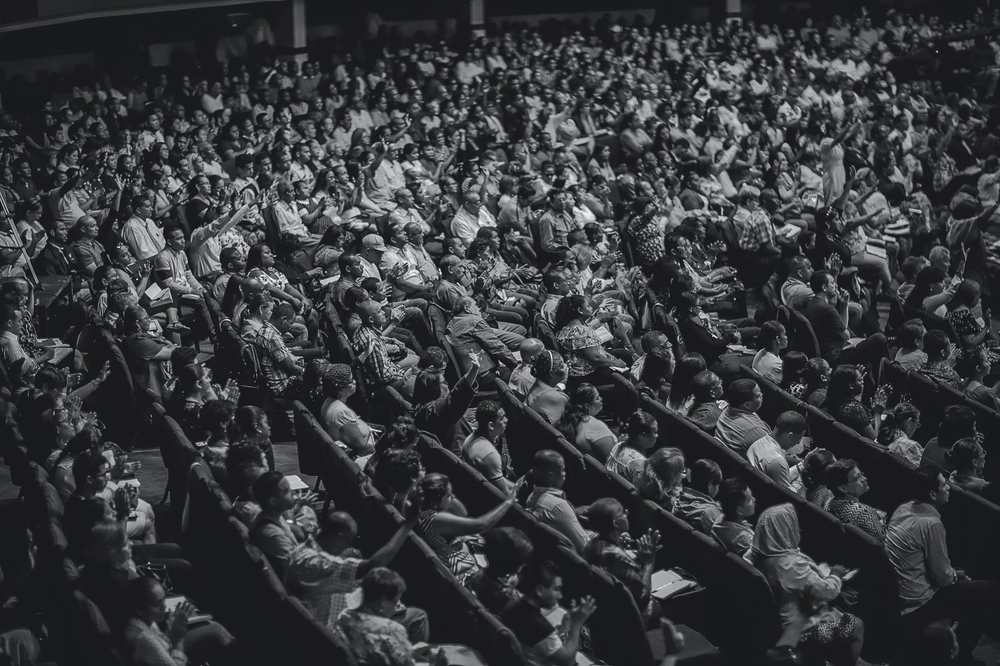
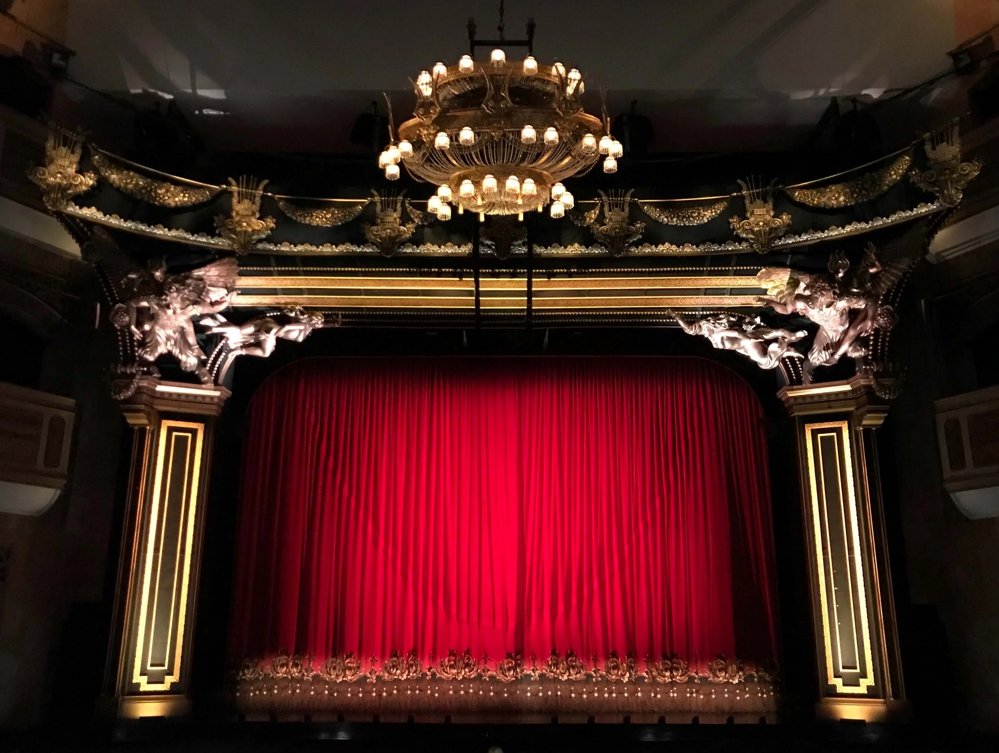
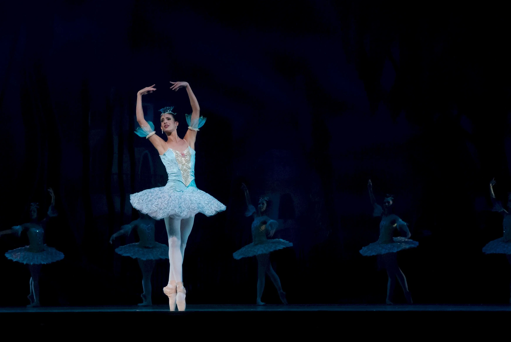
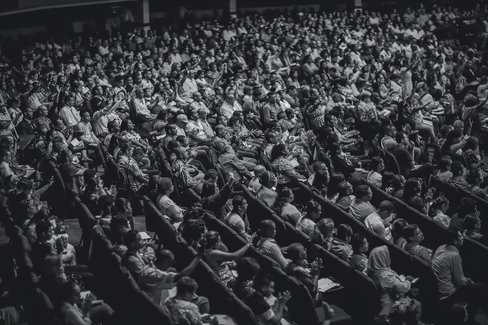
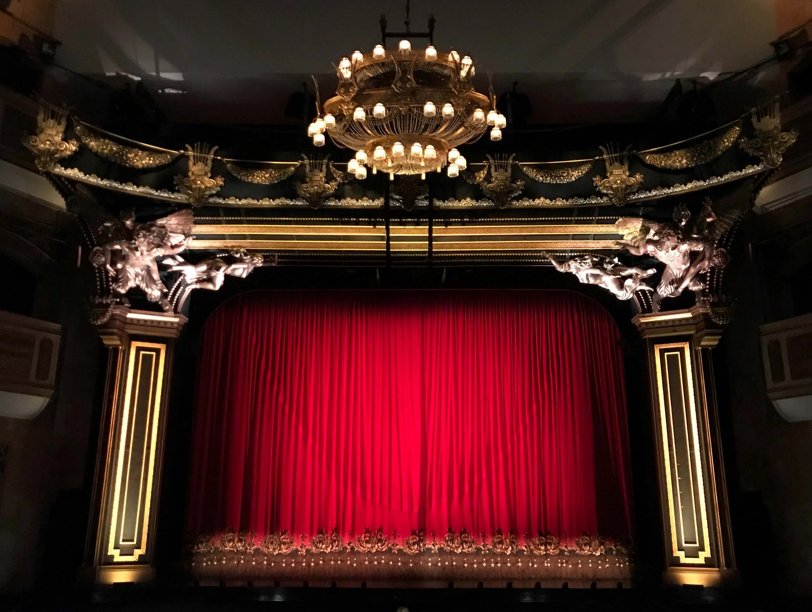
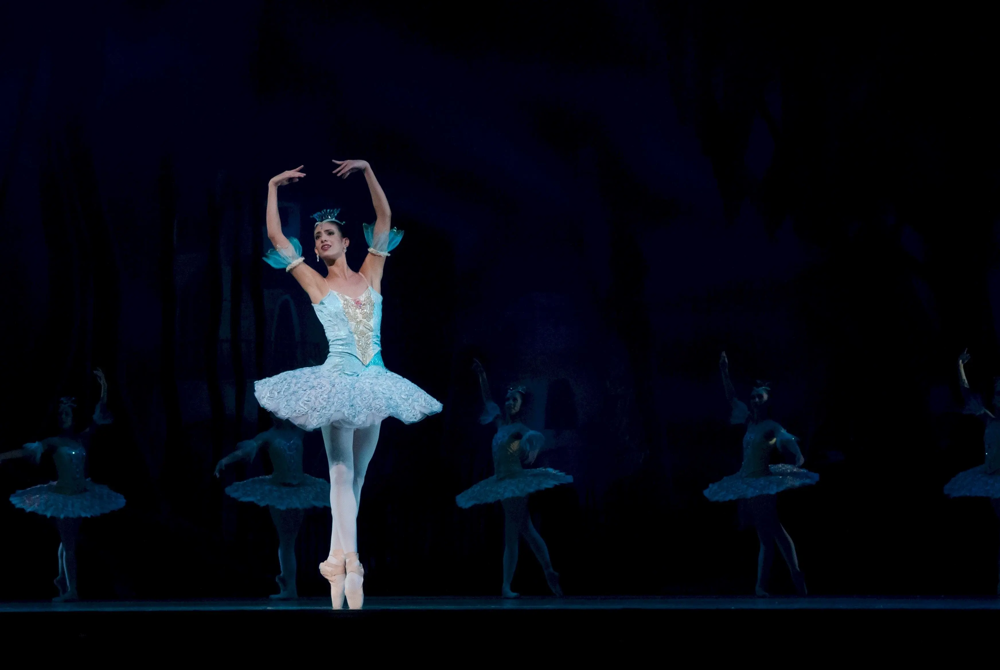

Teatro Colón - Buenos Aires
El Teatro Colón inició sus actividades en 1857 en un edificio ubicado en la Plaza de Mayo, donde
funcionó hasta 1888. El teatro se mudó entonces al edificio actual ubicado frente a la Plaza
Vaticano, que tardó 20 años en ser construido hasta su inauguración en 1908.


 




